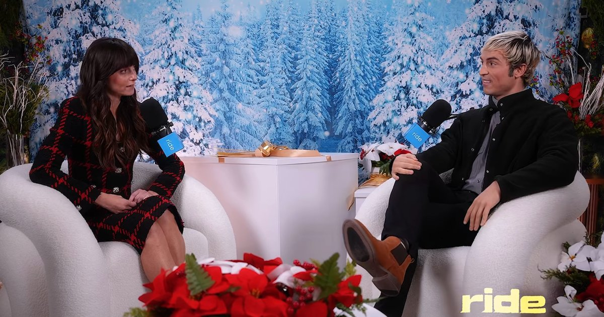
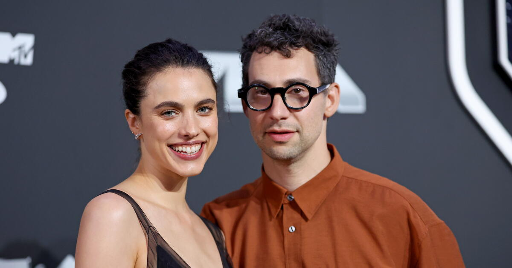
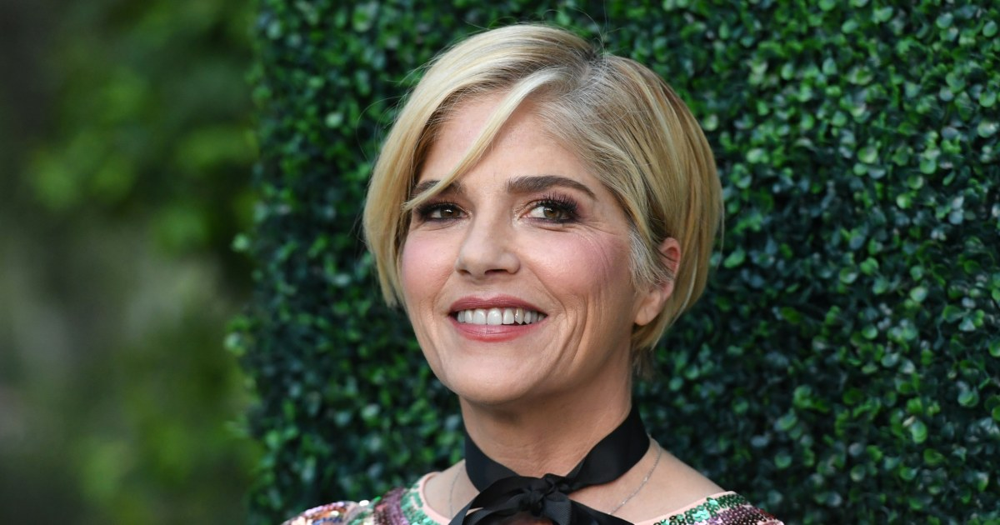

Celebrity Halloween goes edgy: Kim as North, North as Natalie Nunn, and Ellen vs. Dakota

This year’s costumes lean pointed rather than sexy. Kim Kardashian dressed as her 13-year-old daughter North West, piercings and all, while North went as Baddie CEO Natalie Nunn with a prosthetic chin and slick black bob, and Nunn answered by dressing as North. Ride podcasters Benito Skinner and Mary Beth Barone recreated Ellen DeGeneres and Dakota Johnson’s famously frosty talk-show exchange, and Tana Mongeau went as both Elizabeth Holmes and Erika Kirk.
Paris Hilton kept up her yearly Britney Spears tribute with the “I’m a Slave 4 U” look, then caught backlash for dressing as Belle while her daughter played Chip. Olivia Rodrigo was Marie Antoinette, Keke Palmer a Victoria’s Secret angel, and Carson Daly went as Ella Langley. The last big reveal is still to come: Heidi Klum has teased a “very bloody” prosthetic look for her party tonight.
Margaret Qualley and Jack Antonoff make their divorce official

The Substance star and the Bleachers frontman filed for an “uncontested joint divorce” Friday in Brooklyn, about three years after their August 2023 wedding on Long Beach Island, where Taylor Swift, Lana Del Rey and Channing Tatum were among the guests.
They separated in July, when fans noticed Qualley had scrubbed Antonoff from her Instagram, including the wedding photos she’d posted in March to promote his song “dirty wedding dress.” The news broke days after Antonoff showed up at Swift and Travis Kelce’s wedding party without her. A source said then that they’d stay “lifelong friends,” and her team had denied reports of “trust issues” and infidelity.
You Can See Everything and Clayface fight for No. 1 on a sleepy Halloween weekend
With Halloween on a Saturday, no studio opened anything big, so it’s a holdover rematch. Friday numbers put A24’s Nathan Fielder and Lance Oppenheim documentary about Elizabeth Holmes at about $3.2 million, heading for $10 million to $11 million in its third weekend and roughly $64 million total. DC’s Clayface, last weekend’s winner, is right behind at about $3.1 million Friday and $10 million-plus for the weekend.
Deadline gives the edge to the documentary, which has beaten its forecast every week. Laika’s Wildwood is third at around $6.8 million, then Wicker and Street Fighter. Last year’s Halloween weekend was one of the slowest of the year, and this one is shaping up similarly.
 You Can See Everything trailer on YouTube →
·
You Can See Everything trailer on YouTube →
·
 Clayface trailer on YouTube →
·
Clayface trailer on YouTube →
·
 Deadline box office →
Deadline box office →
Selma Blair apologizes after her arrest on a Delta flight

In an Instagram video Friday, her first public words since the October 11 incident, Blair said, “To the people that I disappointed, that I hurt, that I frightened, alarmed, I am so sorry,” adding that she has never intended to hurt anyone. Her lawyers advised her not to discuss the case.
Authorities say she became physically abusive on a Los Angeles to New York flight, injuring two flight attendants, and later kicked a Port Authority officer and a hospital nurse. She has pleaded not guilty to two counts of second-degree assault, and her attorney says it was a medical emergency tied to her multiple sclerosis and Parkinsonism, missed medication and a fall on the plane. The case returns to court January 19.
Bottom of the news
- The Kelly Clarkson Show led the Daytime Emmys with five wins, and General Hospital took drama series for the sixth year in a row.
- Martin Scorsese joked that Seth Rogen “ruined” his Angelina Jolie Cleopatra film, since the Sony hack over The Interview derailed it.
- Reese Witherspoon’s Hello Sunshine reportedly cut half its staff after she bought the company back.
- Bill Belichick and Jordon Hudson reportedly split late last year.
- Ryan Gosling’s band Dead Man’s Bones released “Lost in the Night,” their first song since 2009.
- Mariah Carey released a 27-track 25th-anniversary edition of Glitter.
- Kirk Franklin put out I Am What I Am, his first double album, with GloRilla, Jelly Roll and Davido.
- Patrick Stewart’s estranged son Daniel spoke publicly two days after his father’s death.